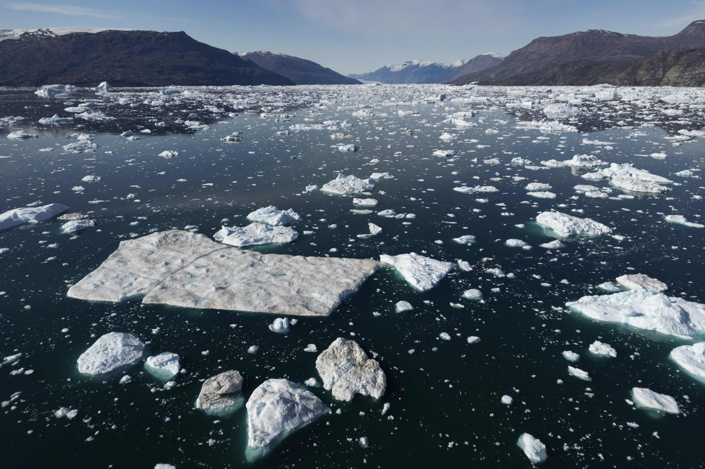

University of Pennsylvania · SP2 · CCAR
A research community advancing evidence and ideas
for a more resilient world.
CAF is part of the new Center for Climate Adaptation and Resilience (CCAR) at Penn's School of Social Policy & Practice, led by Professor Jisung Park. While reducing emissions is essential, we focus on what comes next — building the evidence base for how communities, institutions, and economies adapt to the climate shocks already underway.
Our Values
We apply cutting-edge causal methods and large-scale data to produce credible, reproducible evidence on climate adaptation.
Climate change affects people differently. We center the experiences of vulnerable communities in our research and recommendations.
Economists, sociologists, demographers, and practitioners — working across disciplines to tackle problems too big for any one field.
Research that reaches beyond journals — informing policy, guiding institutions, and equipping decision-makers with actionable evidence.
Our Projects
Climate & Behavior
Why do homeowners — even wealthy ones — underutilize fire-resistant materials? We study behavioral, economic, and informational barriers to adaptation investment.
Health & Productivity
Extreme heat affects health and productivity differently across populations. We examine how these disparities shape long-run economic outcomes and adaptation capacity.
Community Resilience
How do climate shocks reshape community bonds, collective action, and social trust? We use large-scale survey data to quantify these effects across diverse contexts.
The Latest
2025 · Launch
Penn's School of Social Policy & Practice launched the Center for Climate Adaptation and Resilience this summer, led by Professor Jisung Park. CAF is an integral part of CCAR's research community — bringing together fellows across economics, sociology, demography, and policy to generate actionable climate adaptation research.
Read more →Spring 2026
CAF welcomes new fellows for the spring semester
Winter 2025
Climate Week Fellow Ellery Spikes presents on climate finance frameworks
Fall 2025
New working paper: heat exposure and human capital outcomes
Summer 2025
Transitioning from ACES Lab into the Climate Adaptation Fellows Program
Get Involved
We welcome partnerships with researchers, policymakers, and organizations working at the intersection of climate and society.
Contact Us →